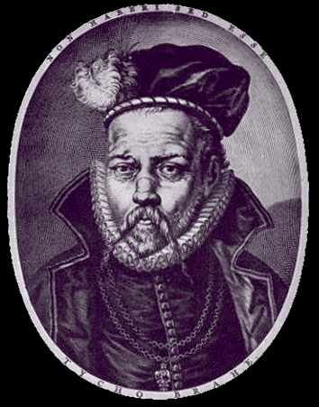
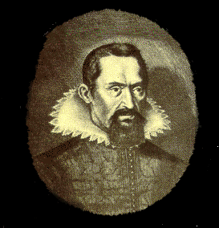

|  |
Despite these problems, the Greek astronomers and most of the people who listened to them believed that celestial objects were perfect circles, moving in perfect circles without change for all time. This view fell apart thanks to the Danish astronomer Tycho Brahe (1546-1601). Tycho, usually called by his first name, led an unusual life in many respects. He was born into the upper crust of Danish nobility. Attending a dance at a professor's house at the University of Rostack, Germany, he fell into an argument with another aristocrat, Manderup Parsbjerg. They fought, and Tycho lost his nose. For the rest of his life, he wore a metal replacement, usually said to be made from silver. According to legend, he died when good manners forced him to remain at a banquet table, even though he desperately needed to urinate. After several hours of this torture, his bladder burst.
(Recent investigations indicate that Tycho's fatal uremia may have resulted from mercury poisoning. An alchemist as well as an astronomer, Tycho may have ingested mercury-rich medicines of his own devising, with less than beneficial results.)
Almost thirty years before his unusual demise, Tycho had shocked Europe. In November of 1572, he was walking home from his uncle's chemistry laboratory and noticed a new star, shining brightly in the constellation Casseopeia. We now know that this was a supernova, a massive star that reached the end of its fuel supply and exploded. Aristotle's astronomy said that nothing in the heavens really changed; all events that looked otherwise (comets, falling stars and such) were really just like clouds or storms, weather happening in the Earth's air. Tycho showed that his new star was too far away for that to be true. The next year, he published a book, De Stella Nova, which reported his observations. (Most scientific discussion at the time went on in Latin, which let professors and thinkers from different countries communicate in a common language. This was beneficial, although it did exclude most people from the scientific process. Anyone who couldn't speak Latin was basically shut out from scientific discoveries. Latin was so common in intellectual communities that even college students spoke it; Paris's Left Bank has a section called the Latin Quarter thanks to all the college-related people who lived there.) Our modern word "nova" comes from Tycho's book title. Any "nova" is a star which shines more brightly than usual for some stretch of time. The star might be too dim to see until it goes nova, at least without a good telescope. Logically, a "supernova" is a star which bursts out with even greater power.
 |
In 1600, Tycho gained an assistant of sorts, the talented mathematician Johannes Kepler (1571-1630). Kepler, who we usually call by his last name, was not as skilled as Tycho when it came to making observations on the sky. However, he was remarkably gifted at geometry and was ideally suited to making sense out of the observations Tycho had recorded. They differed in many respects and had considerable trouble getting along. Kepler was an avid Copernican; along with Galileo Galilei (1564-1642) he believed in the Polish astronomer Nicolaus Copernicus (1473-1543), who had revived a pre-Aristotle notion that the Sun, instead of the Earth, was the center of the Universe. Tycho, on the other hand, believed in a model he had invented himself, where the Sun and Moon circled the Earth, but all other planets circled the Sun. Kepler came from a background radically different from Tycho's upper-class youth; his father was a mercenary and his mother would be tried for witchcraft.
After Tycho died, Kepler used his measurements to improve Copernicus's theory of the Universe, developing a set of three laws which describe the motion of the planets. This was an astounding accomplishment, which consumed many years of Kepler's life. This would be enough to secure him a proud place in the astronomical hall of fame; he also had the luck to observe a supernova.
In 1604, Kepler saw a bright star in the constellation Ophiuchus. His observations, published in De stella nova in pede Serpentarii, provided another item of evidence against the old Aristotelian belief.
| [Prev] | [Up] | [Next] |
| Ancient Astronomy | Contents | Ophiuchus |